This section is devoted to the following result -- the Klass-Nowicki Inequality.
The original inequality of this form was for Rademacher (or Bernoulli) sums and 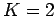, and was due to Kahane (1968). This was extended by Hoffmann-Jørgensen (1974) to general sums, at least for positive or symmetric random variables, for the case . Indeed, if one wants Theorem 3.1 for 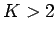, but without the 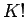 factor, this may be obtained by iterating the Hoffmann-Jørgensen Inequality, as was done by Johnson and Schechtman (1989, Lemmas 6 and 7). (Both Kahane and Hoffmann-Jørgensen obtained slightly different constants than those we have presented. Also, in neither case did a factor like 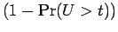 appear in their formulae.)
Klass and Nowicki (1998) were able to obtain Theorem 3.1, at least in the case when the random variables are positive or symmetric. (However their constants are better than ours.) Removing the positive or symmetric condition is really not so hard, but because it does not appear in the literature in this manner, we will give a complete proof of Theorem 3.1.
We also note that this inequality has some comparison with a result that appears in Ledoux and Talagrand (1991, Theorem 6.17.)
Proof: Let  be the length of the sequence . During this
proof, let us write 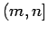 for the set of integers greater than
be the length of the sequence . During this
proof, let us write 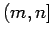 for the set of integers greater than  and not greater than
and not greater than  .
.
We start with the observation
For 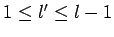, and 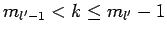, we have that 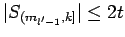 and 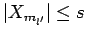. Hence for
Therefore
| 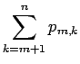 | 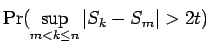 | ||
| 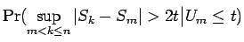 | |||
| 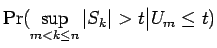 | |||
 |
|||
| 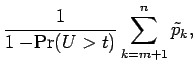 |
Now we rearrange the sum as follows:
| 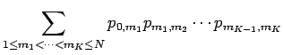 | |||
| 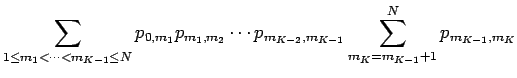 | |||
| 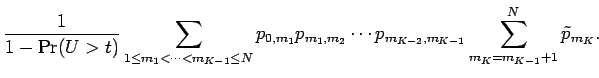 |
| 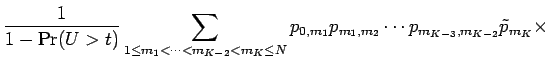 | |||
| 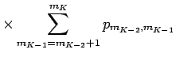 | |||
| 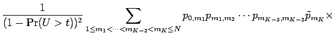 | |||
| 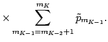 |

Let us now understand what this result means in terms of the decreasing rearrangement.
Proof: Notice that if
are
non-increasing functions,
then
, and if ,
then
, where here denotes either the left
or right continuous inverse of  . Since
for
any
two positive numbers
. Since
for
any
two positive numbers  and
and  , from Theorem 3.1,
and setting , we have
that if
, then for all positive integers
, from Theorem 3.1,
and setting , we have
that if
, then for all positive integers
Since this paper was submitted, Mark Rudelson pointed out to us a couple of ways that Theorem 3.1 can be improved. First, we may obtain a result closer to that of Ledoux and Talagrand (1991, Theorem 6.17. Let be the order statistics of , that is, the values of rearranged in decreasing order. Then exactly the same proofs gives the following strengthening: for all positive integers
Secondly, a similar result is also true if we replace  by
.
This is certainly the case if the sequence consists of
symmetric random variables, since they satisfy the Lévy property.
Now let
be an independent
copy of , and let
. Let and
respectively denote the sums formed from these two sequences of
random variables. Thus we have the result for
, since it is
a sum of symmetric random variables. But
by
.
This is certainly the case if the sequence consists of
symmetric random variables, since they satisfy the Lévy property.
Now let
be an independent
copy of , and let
. Let and
respectively denote the sums formed from these two sequences of
random variables. Thus we have the result for
, since it is
a sum of symmetric random variables. But
 and
and
Thus a version of
Corollary 3.2 is also true when  is replaced
by
.
is replaced
by
.